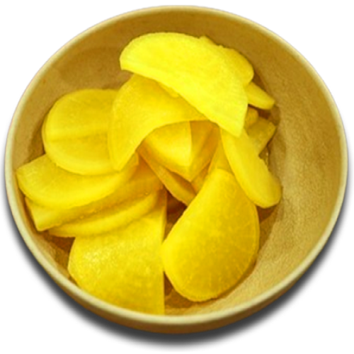
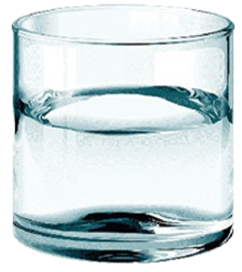
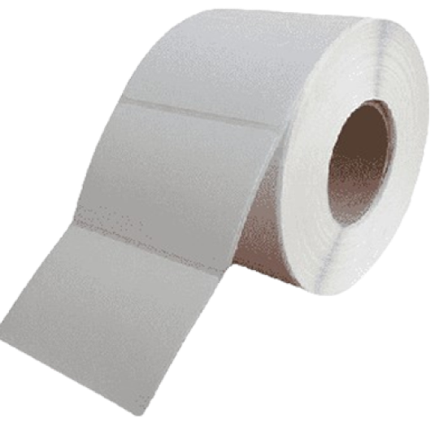
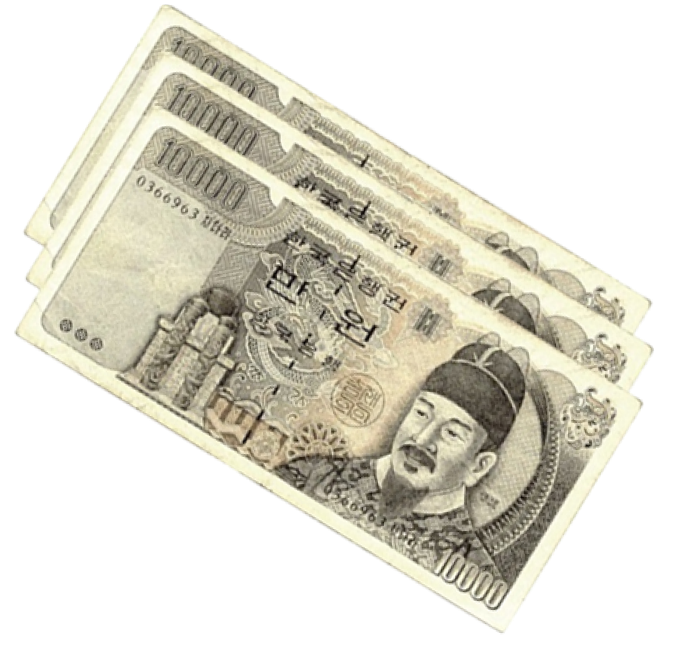

틈새문화
틈새에는 독특한 언어 문화가 있습니다.
-

- 파일애플? - 라면집에서 파인애플을?
- 과일가게도 아니고 파인애플이 있을 리야 없습니다. 노랗고 맛있는 것, 바로 단무지입니다. 틈새의 단무지는 직접 만들어 그 맛이 독특합니다.
-

- 오리방석? 오리가 앉는 방석은?
- 수수께끼 같지만 의외로 간단합니다. 바로 물, 땀 흘리며 열심히 빨계떡에 열중하다가 한잔 들이키는 시원한 물 맛, 틈새에서는 물 한잔도 독특한 맛으로 기억됩니다.
-

- 입걸레? - 입걸레는 제일 쉬운 문제 일 듯 합니다.
- 바로 휴지를 가리키는 말입니다. 명동틈새시절에 손님들과 재미로 주고받다가 만장일치로 채택된 언어라도 하는군요.
-

- 돈 뺏어라, 오만원이야
- 과일가게도 아니고 파인애플이 있을 리야 없습니다. 노랗고 맛있는 것, 바로 단무지입니다. 틈새의 단무지는 직접 만들어 그 맛이 독특합니다.